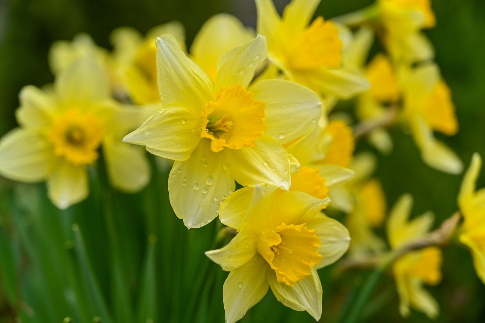
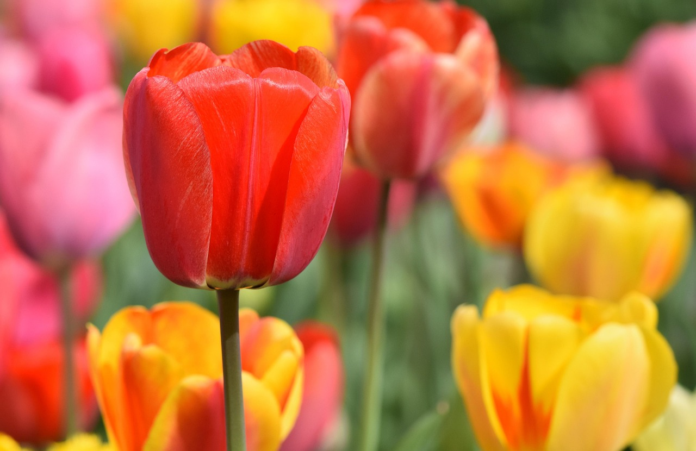

The daffodil is a vibrant spring flower symbolizing renewal and joy. With its trumpet-shaped bloom in yellow, white, or orange, it brightens gardens and signals the arrival of warmer days.

Gardening tips:
Plant daffodil bulbs in the fall, about 2-3 times deeper than their height, with the pointed end up. Choose well-drained soil in a sunny or partly shaded spot. Water after planting and let nature take its course—blooms will appear in spring!
About the flower:
Tulips are elegant spring flowers known for their cup-shaped blooms in various colors. Symbolizing love and renewal, they thrive in well-drained soil and full sun. Popular in gardens and bouquets, tulips bring vibrant beauty to spring landscapes.

Gardening tips:
Plant tulip bulbs in the fall, about 6-8 inches deep with the pointed end facing up. Space them 4-6 inches apart in well-drained soil, preferably in a sunny spot. Water after planting and let them grow, with blooms appearing in spring.